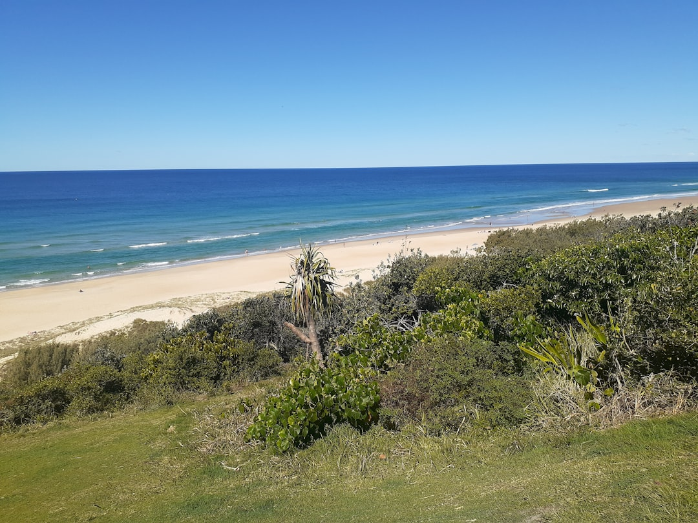

For households comparing mortgage brokers sunshine coast options, the useful question is which broker can test the borrower profile, loan purpose, deposit position and settlement path before an application is lodged.
Mortgage Brokers Sunshine Coast Explained
Home Loan Broker Sunshine Coast describes a review that compares big four banks, second-tier lenders, mutuals and non-banks. For a borrower, the useful output is a shortlist tied to income, deposit, dependants, existing debts, property type and loan purpose.
The published process starts with a short form, then a broker callback, a review, application handling and settlement support. Use the first call to separate what is known from what still needs documents or lender serviceability.
- Ask which lender types are being compared.
- Confirm whether the review is for purchase, refinance, investment or construction finance.
- Ask what evidence is needed before a lender-specific borrowing estimate is given.
- Check how commission, fees and clawback arrangements will be disclosed.
Who This Applies To
The published guide names first home buyers, refinancers, investors and construction borrowers. A first buyer may need help with deposit gaps, grant paperwork and the Australian Government 5% Deposit Scheme. A refinancer needs current rate, fees and structure tested against available alternatives.
Investors should expect questions about interest-only lending, offset accounts, SMSF borrowing where relevant, and whether the structure supports more than one property. Construction borrowers should ask what build documents and staged funding details are needed before lender assessment.
For a related comparison, this Sunshine Coast home loan broker guide should be judged the same way: advice is only useful when it is tied to the borrower file.
Documents And Numbers To Prepare
The FAQ lists two recent payslips, three months of personal account statements, identification, current loan or rent details, and an idea of property type. Bringing those items early lets the broker test lender policy rather than rely on a calculator estimate.
The published borrowing guidance gives a stated common range of $450,000 to $900,000 for many Sunshine Coast households on standard owner-occupier terms. It also says borrowing power depends on net income, ongoing commitments, dependants and lender policy. A precise figure needs live serviceability.
- For PAYG income, check payslips against bank statement deposits.
- For existing debts, list repayments, limits and loans being retained.
- For a refinance, bring the current balance, rate, fees and structure.
- For a purchase, separate deposit funds from costs outside the loan.
First Buyer Checks
The first buyer material refers to the Queensland First Home Owner Grant, the Australian Government 5% Deposit Scheme, deposit gaps and lender selection. Ask the broker to put those items in order before a contract decision, because the guide states property price caps still apply to the 5% Deposit Scheme.
Useful questions are practical: is the deposit being treated as genuine savings, would lenders mortgage insurance apply, and who handles any scheme paperwork with the loan? The guide says family guarantor structures and the 5% Deposit Scheme can reduce or remove LMI cost for eligible buyers where eligibility and property price caps are met.
Refinance And Investor Checks
A refinance review should compare more than a headline rate. The guide says the broker compares the current rate, fees and structure against the panel, then flags whether switching is worth it before anything is signed. Ask whether the saving still works after discharge costs, application costs and changed loan features.
Investment borrowers need a portfolio conversation. The guide names interest-only loans, offset accounts, SMSF structures and multiple-property structures. Ask how rental income will be assessed, whether the loan suits the next purchase, and what happens if the preferred lender's policy does not fit the full position. ASIC Moneysmart's property-investment guidance can help frame debt and cash-flow questions before purchase.
How To Judge Broker Fit
The guide says independent licensed brokers handle credit advice and applications end to end. A useful shortlist should explain lender fit, repayment type, offset use, LMI exposure, settlement steps and review support after settlement.
The FAQ says brokers are generally paid commission by the lender when a loan settles, and that commission, any fees and any clawback arrangements must be disclosed in writing before the borrower commits.
- Ask why the recommended lender fits better than the next option.
- Ask what could delay approval or settlement.
- Ask whether annual rate reviews are available after settlement.
- Ask what change would make the loan unsuitable before signing.
- Define the loan purpose. State whether the review is for a first purchase, refinance, investment purchase or construction loan.
- Prepare the evidence. Collect payslips, bank statements, identification, current loan or rent details and property information before the callback.
- Test the shortlist. Ask the broker to explain why each lender option fits the borrower profile and what policy issue could rule it out.
- Check disclosure. Read written disclosure for commission, fees and clawback arrangements before committing to an application.
- Confirm settlement steps. Clarify who contacts the lender, conveyancer and borrower once approval and settlement are underway.
| Situation | Primary review focus | Questions to ask |
|---|---|---|
| First home buyer | Deposit, scheme eligibility, grant paperwork and lender selection | Can the broker confirm caps and LMI treatment before contract? |
| Refinancer | Current loan costs compared with panel alternatives | Does the saving justify switching once fees and structure changes are counted? |
| Investor | Interest-only, offset, SMSF or multiple-property strategy | Will the structure still work if another purchase is planned? |
| Construction borrower | Build details, deposit and staged funding needs | What documents are needed before lender assessment? |
This guide covers broker-review preparation for Sunshine Coast first buyer, refinance, investor and construction loan scenarios.